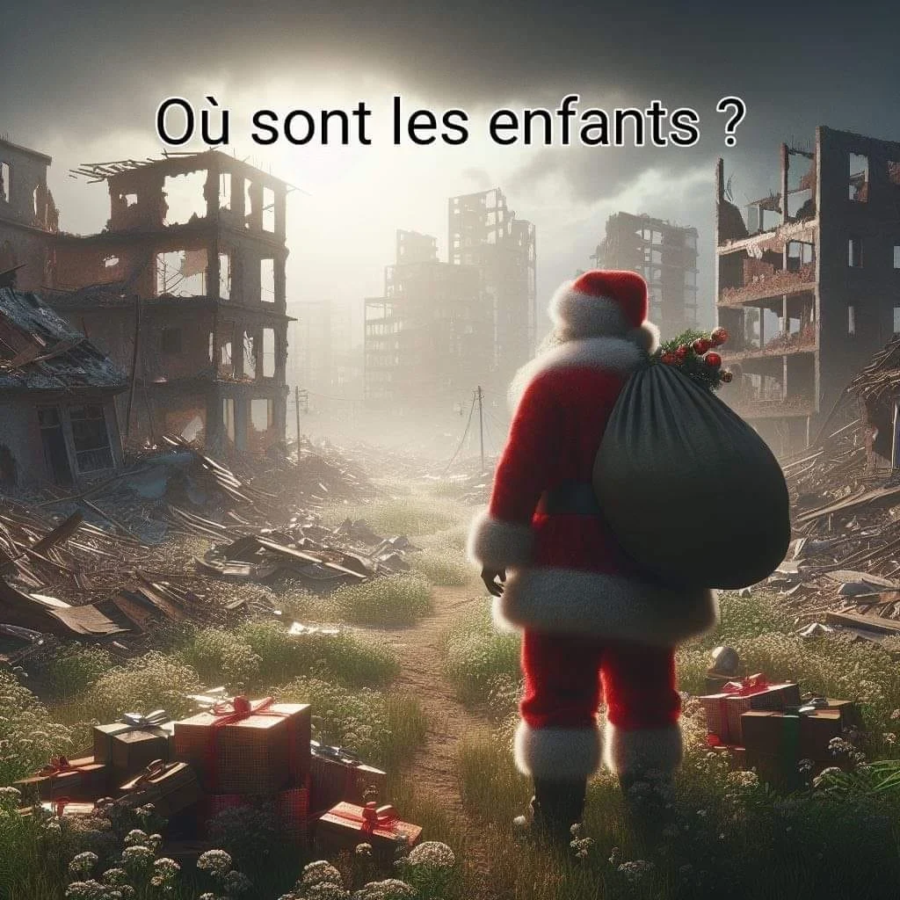

Publication d’archives
Gaza. Un visuel partagé pour le cessez-le-feu
Date indiquée par Facebook · 26 décembre 2023
Repères éditoriaux
Le visuel porte la question « Où sont les enfants ? ». La publication l’accompagne d’un appel au cessez-le-feu.
Texte conservé avec la publication
#CessezLeFeu #Gaza

Sources
Archive rouge · export Facebook · AR-0002-FB-01512
À lire aussi · À Niort, le rassemblement du 25 octobre pour la paix en vidéo · Le lien d’origine